Calm: Windows Workloads¶
The estimated time to complete this lab is 60 minutes.
Overview¶
In this exercise you will explore the basics of working with Windows workloads in Nutanix Calm by building and deploying a blueprint that installs and configures a multi-tier bug tracker web app using Microsoft SQL Server database & IIS webserver. This lab assumes you are familiar with basic Calm functionality or have completed the Calm: Linux Workloads lab.
Creating the Blueprint¶
Within Calm, create a new Multi VM/Pod Blueprint.
Fill out the following fields and click Proceed to launch the Blueprint Editor:
- Name - Initials-CalmWindowsIntro
- Description - [BugNET](http://@@{MSIIS.address}@@/bugnet)
- Project - Initials-Calm
Note
Using the description value provided will create a hyperlink to the BugNET application to launch once deployment has completed.
Click Credentials and create the following two credentials:
Credential Name WIN_VM_CRED SQL_CRED Username Administrator Administrator Secret Type Password Password Password nutanix/4u Str0ngSQL/4u$ 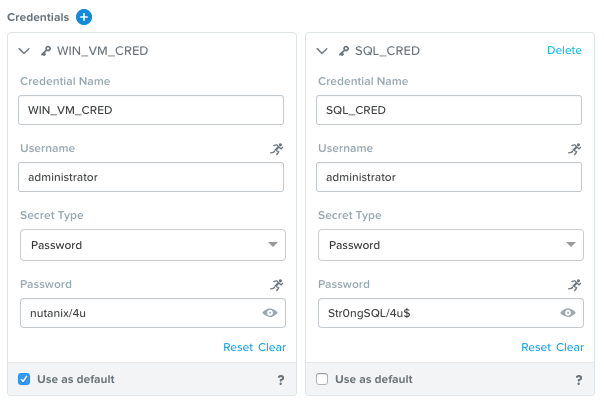Click Save and return back to the Blueprint Editor.
Click Configuration and create the following Downloadable Image Configuration:
- Package Name - MSSQL2014_ISO
- Description - Microsoft SQL 2014 Installation ISO
- Image Name - MSSQL2014.iso
- Image Type - ISO Image
- Architecture - X86_64
- Source URI - http://download.microsoft.com/download/7/9/F/79F4584A-A957-436B-8534-3397F33790A6/SQLServer2014SP3-FullSlipstream-x64-ENU.iso
- Product Name - MSSQL
- Product Version - 2014
- Checksum Algorithm - Leave blank
- Checksum Value - Leave blank
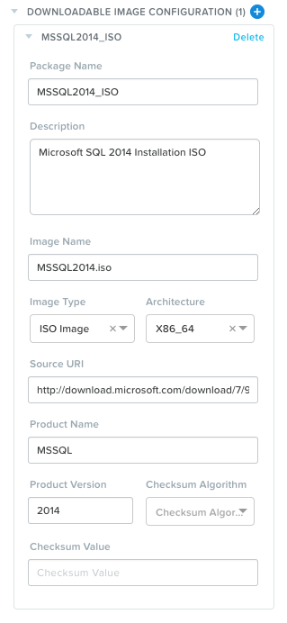Click Save and return back to the Blueprint Editor.
Using the Default Application Profile, specify the following Variables in the Configuration Panel:
Name Data Type Value | Secret Runtime DbName String BugNET | No Yes DbUsername String BugNETUser No Yes DbPassword String Nutanix/4u$ Yes Yes User_initials String Leave blank No Yes 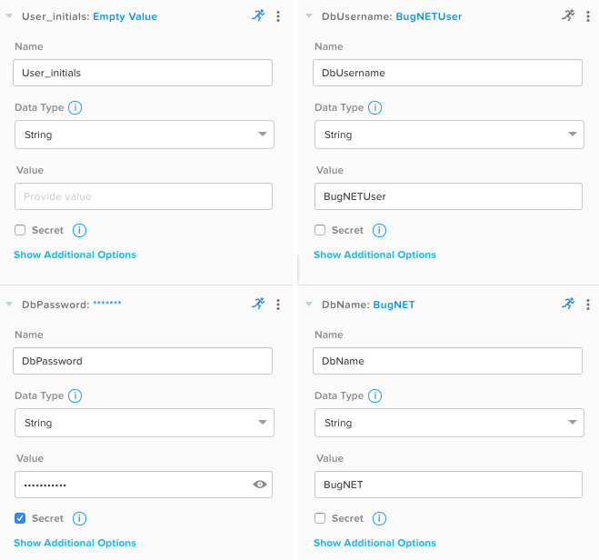Click Save.
Adding Services¶
Under Application Overview > Services, click twice to add two new Services.
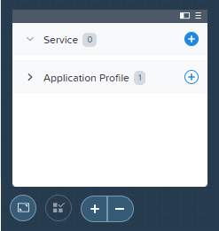Use the table below to complete the VM fields for each service:
Service Name MSSQL MSIIS Name MSSQL2014 MSIIS8 Cloud Nutanix Nutanix Operating System Windows Windows VM Name @@{User_initials}@@-MSSQL @@{User_initials}@@-MSIIS Number of Images 2 1 Image 1 Windows2012R2 Windows2012R2 Device Type 1 DISK DISK Device Bus 1 SCSI SCSI Bootable 1 Yes Yes Image 2 MSSQL2014_ISO N/A Device Type 2 CD-ROM N/A Device Bus 2 IDE N/A Bootable 2 No N/A vCPUs 2 2 Cores per vCPU 2 2 Memory (GiB) 6 6 Guest Customization Yes Yes Type Sysprep Sysprep Install Type Prepared Prepared Script Copy script below table Copy script below table Additional vDisks 1 1 Device Type DISK DISK Device Buse SCSI SCSI Size (GiB) 100 100 VGPUs None None Categories None None Network Adapters 1 1 NIC 1 Primary Primary Check log-in upon create Yes Yes Credential WIN_VM_CRED WIN_VM_CRED Address NIC 1 NIC 1 Connection Type Windows (Powershell) Windows (Powershell) Connection Port 5985 5985 Delay (in seconds) Increase to 90 Increase to 90 Sysprep Script¶<?xml version="1.0" encoding="UTF-8"?> <unattend xmlns="urn:schemas-microsoft-com:unattend"> <settings pass="specialize"> <component xmlns:wcm="http://schemas.microsoft.com/WMIConfig/2002/State" xmlns:xsi="http://www.w3.org/2001/XMLSchema-instance" name="Microsoft-Windows-Shell-Setup" processorArchitecture="amd64" publicKeyToken="31bf3856ad364e35" language="neutral" versionScope="nonSxS"> <ComputerName>@@{name}@@</ComputerName> <RegisteredOrganization>Nutanix</RegisteredOrganization> <RegisteredOwner>Acropolis</RegisteredOwner> <TimeZone>UTC</TimeZone> </component> <component xmlns="" name="Microsoft-Windows-TerminalServices-LocalSessionManager" publicKeyToken="31bf3856ad364e35" language="neutral" versionScope="nonSxS" processorArchitecture="amd64"> <fDenyTSConnections>false</fDenyTSConnections> </component> <component xmlns="" name="Microsoft-Windows-TerminalServices-RDP-WinStationExtensions" publicKeyToken="31bf3856ad364e35" language="neutral" versionScope="nonSxS" processorArchitecture="amd64"> <UserAuthentication>0</UserAuthentication> </component> <component xmlns:wcm="http://schemas.microsoft.com/WMIConfig/2002/State" xmlns:xsi="http://www.w3.org/2001/XMLSchema-instance" name="Networking-MPSSVC-Svc" processorArchitecture="amd64" publicKeyToken="31bf3856ad364e35" language="neutral" versionScope="nonSxS"> <FirewallGroups> <FirewallGroup wcm:action="add" wcm:keyValue="RemoteDesktop"> <Active>true</Active> <Profile>all</Profile> <Group>@FirewallAPI.dll,-28752</Group> </FirewallGroup> </FirewallGroups> </component> </settings> <settings pass="oobeSystem"> <component xmlns:wcm="http://schemas.microsoft.com/WMIConfig/2002/State" xmlns:xsi="http://www.w3.org/2001/XMLSchema-instance" name="Microsoft-Windows-Shell-Setup" processorArchitecture="amd64" publicKeyToken="31bf3856ad364e35" language="neutral" versionScope="nonSxS"> <UserAccounts> <AdministratorPassword> <Value>@@{WIN_VM_CRED.secret}@@</Value> <PlainText>true</PlainText> </AdministratorPassword> </UserAccounts> <AutoLogon> <Password> <Value>@@{WIN_VM_CRED.secret}@@</Value> <PlainText>true</PlainText> </Password> <Enabled>true</Enabled> <Username>Administrator</Username> </AutoLogon> <FirstLogonCommands> <SynchronousCommand wcm:action="add"> <CommandLine>cmd.exe /c netsh firewall add portopening TCP 5985 "Port 5985"</CommandLine> <Description>Win RM port open</Description> <Order>1</Order> <RequiresUserInput>true</RequiresUserInput> </SynchronousCommand> <SynchronousCommand wcm:action="add"> <CommandLine>powershell -Command "Enable-PSRemoting -SkipNetworkProfileCheck -Force"</CommandLine> <Description>Enable PS-Remoting</Description> <Order>2</Order> <RequiresUserInput>true</RequiresUserInput> </SynchronousCommand> <SynchronousCommand wcm:action="add"> <CommandLine>powershell -Command "Set-ExecutionPolicy -ExecutionPolicy RemoteSigned"</CommandLine> <Description>Enable Remote-Signing</Description> <Order>3</Order> <RequiresUserInput>false</RequiresUserInput> </SynchronousCommand> </FirstLogonCommands> <OOBE> <HideEULAPage>true</HideEULAPage> <SkipMachineOOBE>true</SkipMachineOOBE> </OOBE> </component> <component xmlns:wcm="http://schemas.microsoft.com/WMIConfig/2002/State" xmlns:xsi="http://www.w3.org/2001/XMLSchema-instance" name="Microsoft-Windows-International-Core" processorArchitecture="amd64" publicKeyToken="31bf3856ad364e35" language="neutral" versionScope="nonSxS"> <InputLocale>en-US</InputLocale> <SystemLocale>en-US</SystemLocale> <UILanguageFallback>en-us</UILanguageFallback> <UILanguage>en-US</UILanguage> <UserLocale>en-US</UserLocale> </component> </settings> </unattend>
Take a minute to review the Sysprep script. You can see the VMs being configured to autologon to the local Administrator account using the WIN_VM_CRED password. While this exercise will not join the VMs to an Active Directory domain, you could use either Sysprep or a Package Install task script to automate the joining of a domain.
Additionally, the firewall is configured to allow port 5985 which Calm uses to execute PowerShell scripts against the host. For those familiar with previous versions of Calm, the Karan service VM is no longer required to proxy PowerShell commands to the service VMs. Instead, Calm has introduced native support for running PowerShell scripts on remote hosts.
Similar to the Task Manager application in the Calm: Linux Workloads lab, you want to ensure the database is available prior to the IIS web server setup.
In the Blueprint Editor, select the MSIIS service and create a dependency on the MSSQL service.
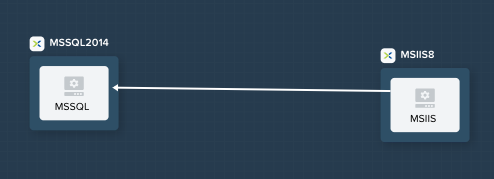
Defining Package Install¶
For each of the following 7 scripts (3 for MSSSQL and 4 for MSIIS), the Type, Script Type, and Credential fields will be the same:
- Type - Execute
- Script Type - PowerShell
- Credential - WIN_VM_CRED
Note
If you were working with domain joined VMs, you would require a separate domain credential to execute PowerShell scripts following the VM being joined to the domain.
Select the MSSQL service and open the Package tab in the Configuration Panel.
Name the package and click Configure install to begin adding installation tasks.
You will add multiple scripts to complete each installation. Working with multiple scripts allows for easier maintenance and application of code across multiple services or blueprints using the Calm Task Library. The Task Library allows you to create modularized scripts to achieve certain common functions such as joining a domain or configuring common OS settings.
Under MSSQL > Package Install, click + Task and fill out the following fields:
- Task Name - InitializeDisk1
- Script -
Get-Disk -Number 1 | Initialize-Disk -ErrorAction SilentlyContinue New-Partition -DiskNumber 1 -UseMaximumSize -AssignDriveLetter -ErrorAction SilentlyContinue | Format-Volume -Confirm:$false # Enable CredSSP Enable-WSManCredSSP -Role Server -Force
The above script simply performs an initialization and format of the extra 100GB VDisk added during VM configuration of the service.
Click Publish To Library > Publish to save this task script to the Task Library for future use.
Repeat clicking + Task to add the remaining two scripts:
- Task Name - InstallMSSQL
- Script -
$DriveLetter = $(Get-Partition -DiskNumber 1 -PartitionNumber 2 | select DriveLetter -ExpandProperty DriveLetter) $edition = "Standard" $HOSTNAME=$(hostname) $PackageName = "MsSqlServer2014Standard" $Prerequisites = "Net-Framework-Core" $silentArgs = "/IACCEPTSQLSERVERLICENSETERMS /Q /ACTION=install /FEATURES=SQLENGINE,SSMS,ADV_SSMS,CONN,IS,BC,SDK,BOL /SECURITYMODE=sql /SAPWD=`"@@{SQL_CRED.secret}@@`" /ASSYSADMINACCOUNTS=`"@@{SQL_CRED.username}@@`" /SQLSYSADMINACCOUNTS=`"@@{SQL_CRED.username}@@`" /INSTANCEID=MSSQLSERVER /INSTANCENAME=MSSQLSERVER /UPDATEENABLED=False /INDICATEPROGRESS /TCPENABLED=1 /INSTALLSQLDATADIR=`"${DriveLetter}:\Microsoft SQL Server`"" $setupDriveLetter = "D:" $setupPath = "$setupDriveLetter\setup.exe" $validExitCodes = @(0) if ($Prerequisites){ Install-WindowsFeature -IncludeAllSubFeature -ErrorAction Stop $Prerequisites } Write-Output "Installing $PackageName...." $install = Start-Process -FilePath $setupPath -ArgumentList $silentArgs -Wait -NoNewWindow -PassThru $install.WaitForExit() $exitCode = $install.ExitCode $install.Dispose() Write-Output "Command [`"$setupPath`" $silentArgs] exited with `'$exitCode`'." if ($validExitCodes -notcontains $exitCode) { Write-Output "Running [`"$setupPath`" $silentArgs] was not successful. Exit code was '$exitCode'. See log for possible error messages." exit 1 }
Reviewing the above script you can see it is performing an automated installation of SQL Server, using the SQL_CRED credential details and using the extra 100GB VDisk for the SQL data files.
According to Nutanix best practices for production database deployments, what else would need to be added to the VM/installation?
- Task Name - FirewallRules
- Script -
New-NetFirewallRule -DisplayName "SQL Server" -Direction Inbound -Protocol TCP -LocalPort 1433 -Action allow New-NetFirewallRule -DisplayName "SQL Admin Connection" -Direction Inbound -Protocol TCP -LocalPort 1434 -Action allow New-NetFirewallRule -DisplayName "SQL Database Management" -Direction Inbound -Protocol UDP -LocalPort 1434 -Action allow New-NetFirewallRule -DisplayName "SQL Service Broker" -Direction Inbound -Protocol TCP -LocalPort 4022 -Action allow New-NetFirewallRule -DisplayName "SQL Debugger/RPC" -Direction Inbound -Protocol TCP -LocalPort 135 -Action allow New-NetFirewallRule -DisplayName "SQL Browser" -Direction Inbound -Protocol TCP -LocalPort 2382 -Action allow
Reviewing the above script you can see it is allowing inbound access through the Windows Firewall for key SQL services.
Once complete, your MSSQL service should look like this:
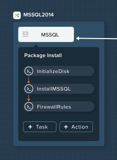Select the MSIIS service and open the Package tab in the Configuration Panel.
Name the package and click Configure install to begin adding installation tasks.
Under MSIIS > Package Install, click + Task.
Similar to the first step of the MSSQL service installation, you will need to initialize and format the additional 100GB VDisk. Rather than manually specifying the same script for this task, click Browse Library.
Select the InitializeDisk1 task you had previously published and click Select > Copy.
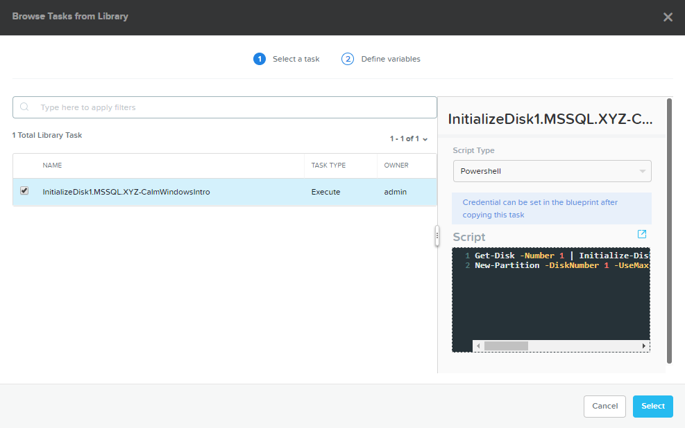Note
The Task Library also gives you the ability to provide variable definitions if there are Calm macros present in the published task.
Specify the Name and Credential, then repeat clicking + Task to add the remaining three scripts:
- Task Name - InstallWebPI
- Script -
# Install WPI New-Item c:/msi -Type Directory Invoke-WebRequest 'http://download.microsoft.com/download/C/F/F/CFF3A0B8-99D4-41A2-AE1A-496C08BEB904/WebPlatformInstaller_amd64_en-US.msi' -OutFile c:/msi/WebPlatformInstaller_amd64_en-US.msi Start-Process 'c:/msi/WebPlatformInstaller_amd64_en-US.msi' '/qn' -PassThru | Wait-Process Invoke-WebRequest 'https://download.microsoft.com/download/4/B/1/4B1E9B0E-A4F3-4715-B417-31C82302A70A/ENU/x86/SQLSysClrTypes.msi' -OutFile c:/msi/SQLSysClrTypes.msi-x86.msi Start-Process 'c:/msi/SQLSysClrTypes.msi-x86.msi' '/qn' -PassThru | Wait-Process Invoke-WebRequest 'https://download.microsoft.com/download/4/B/1/4B1E9B0E-A4F3-4715-B417-31C82302A70A/ENU/x64/SQLSysClrTypes.msi' -OutFile c:/msi/SQLSysClrTypes.msi-x64.msi Start-Process 'c:/msi/SQLSysClrTypes.msi-x64.msi' '/qn' -PassThru | Wait-Process
The above script installs the Microsoft Web Platform Installer (WebPI), which is used to download, install, and update components of the Microsoft Web Platform, including Internet Information Services (IIS), IIS Media Platform technologies, SQL Server Express, .NET Framework, and Visual Web Developer.
- Task Name - InstallNetFeatures
- Script -
# Enable Repair via Windows Update $servicing = "HKLM:\SOFTWARE\Microsoft\Windows\CurrentVersion\policies\Servicing" New-Item -Path $servicing -Force Set-ItemProperty -Path $servicing -Name RepairContentServerSource -Value 2 # Install Features Install-WindowsFeature -Name NET-Framework-Core Install-WindowsFeature -Name NET-WCF-Services45 -IncludeAllSubFeature
The above script installs .NET Framework 4.5 on the VM.
- Task Name - InstallBugNetApp
- Script -
# Create the installation configuration file $configFile = "AppPath[@]Default Web Site/bugnet DbServer[@]@@{MSSQL.address}@@ DbName[@]@@{DbName}@@ DbUsername[@]@@{DbUsername}@@ Database Password[@]@@{DbPassword}@@ DbAdminUsername[@]sa DbAdminPassword[@]@@{SQL_CRED.secret}@@" echo $configFile >> BugNET0.app # Install the application via Web PI WebpiCmd-x64.exe /Install /UseRemoteDatabase /Application:BugNET@BugNET0.app /AcceptEulaThe above script uses the Application Profile variables you defined at the beginning of the exercise to populate the configuration file of the Bug Tracker app. It then leverages WebPI to install the application from the Microsoft Web App Gallery. With minimal changes, you could leverage many popular applications from the Gallery, including apps for CMS, eCommerce, Wiki, ticketing, and more.
Once complete, your MSIIS service should look like this:
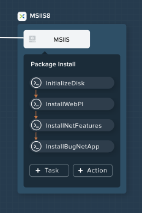Click Save.
Launching the Blueprint¶
From the upper toolbar in the Blueprint Editor, click Launch.
Specify a unique Application Name (e.g. Initials-BugNET) and your User_initials Runtime variable value for VM naming.
Click Create.
The Audit tab can be used to monitor the deployment of the application. The application should take approximately 20 minutes to deploy.
Once the Create action completes, and the application is in a Running state, open the BugNET link in a new tab.
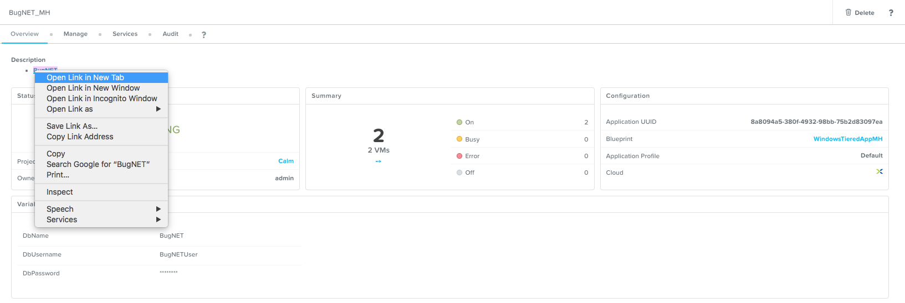You’ll be presented with an Installation Status Report page. Wait for it to report Installation Complete, and then click the link at the bottom to access the application.
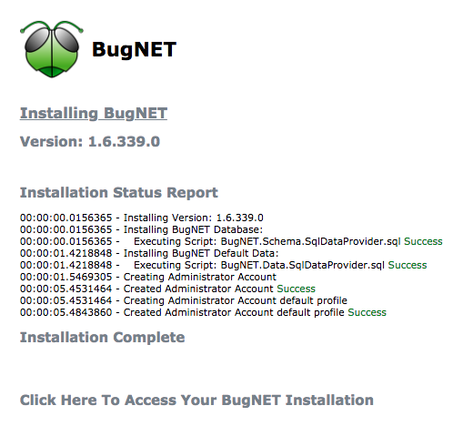Congratulations! You now have a fully functional bug tracking application automatically provisioned leveraging Microsoft SQL Server and IIS.
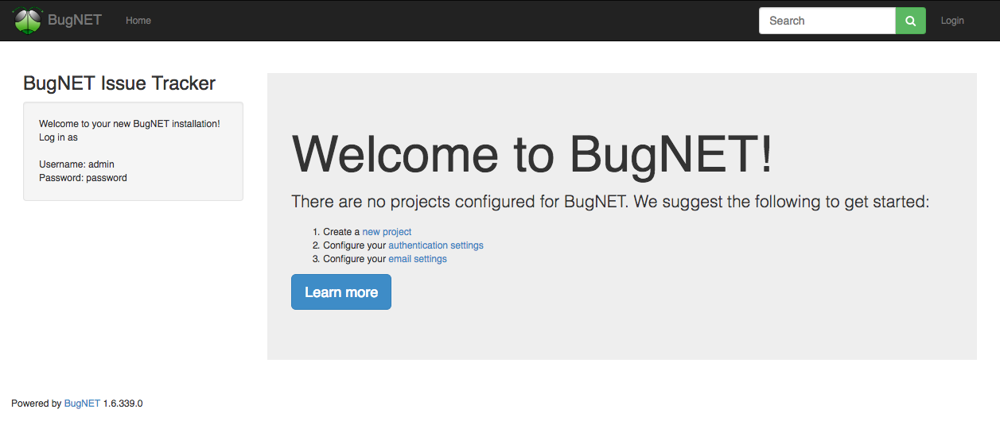
(Optional) Scale Out IIS Tier¶
Leveraging the same approach from the Calm: Linux Workloads lab of having multiple web server replicas, can you add a CentOS based HAProxy service to this blueprint to allow for load balancing across multiple IIS servers?
(Optional) Managing MSSQL with Era¶
Complete the era lab to gain a basic understanding of Era’s capabilities and operation.
Log into your BugNET application with the default credentials (admin/password) and follow the wizard to create a new project.
You have just deployed your production BugNET application and now desire to rapidly deploy multiple dev/test instances using the latest available production data.
Can you build a version of this Blueprint that leverages an Era clone of your SQL Server database?
Hints
- Clone your existing blueprint first!
- When registering the SQL Server source database in Era, this deployment uses the default MSSQLServer instance name. You can use Windows Authentication to access the SQL Server instance, using the WIN_VM_CRED credentials.
- When adding services in Calm, one of the Cloud types is using an Existing VM. Existing VMs only require the IP address of the VM and a credential for login.
- When cloning, the Windows License Key for the Windows Server 2012 R2 VM is
W3GGN-FT8W3-Y4M27-J84CP-Q3VJ9. - You could use a semi-automated approach wherein you have a Runtime variable for your cloned database IP. In this instance, you would create a clone of your source database, wait for it to return an IP address, and provision the blueprint with the IP specified at runtime.
- You could use a fully automated approach wherein you create a Package Install Task for your Existing VM. That task could execute an EScript to perform an API call to Era to initiate the DB clone operation and return the IP address.
- Don’t forget about dependencies!
Takeaways¶
- Calm provides the same application deployment and lifecycle management benefits for Windows workloads as it does for Linux workloads.
- Calm can natively execute remote PowerShell scripts on Windows endpoints without the need for a Windows-based proxy.